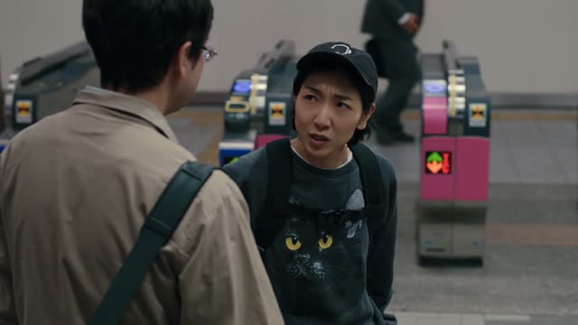
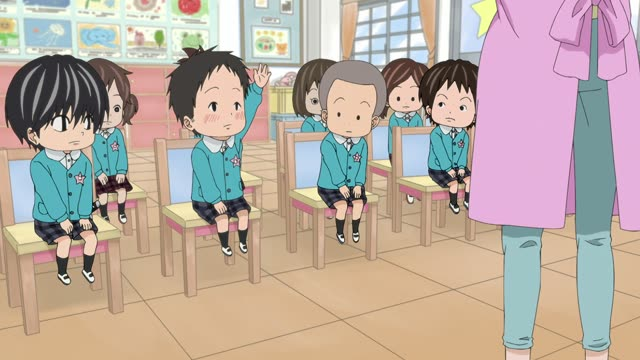
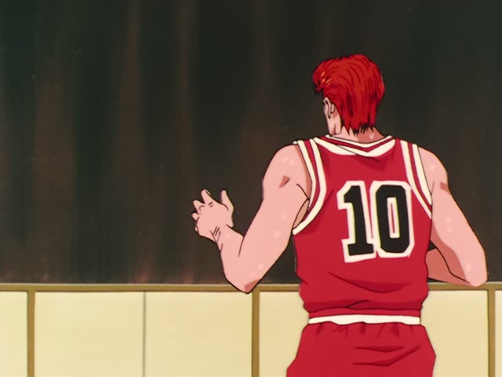
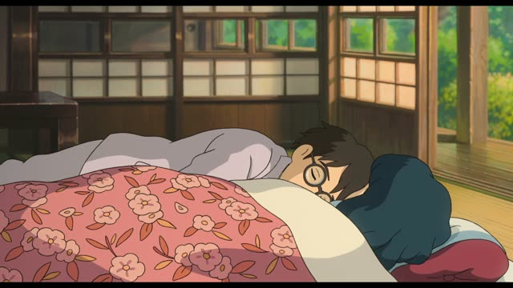

ちょっと
Death Note · Episode 11
ちょっと待ってください。
"Just a moment, please."
ちょっと means a little, a bit. It goes right before the part it makes smaller: ちょっと + 細い = "a bit thin".
It also softens things. On this card, ちょっと待ってください = "just a moment, please". Without ちょっと, 待ってください sounds more like an order.
To say no gently: 今日はちょっと… ちょっと never changes; polite or casual only shows at the end.

He Who Can't Marry · Episode 1
うーんこれはちょっと細いから厳密にはスパゲティーニ
"Hmm, this one's a bit thin, so strictly speaking it's spaghettini."
Here it's the plain "a bit". On this card, he looks at the pasta: it's ちょっと細い, a bit too thin to be spaghetti, so strictly it's spaghettini.
Quick Examples
You try on a jacket in a shop. Your friend asks how it fits.
ちょっと大きい。
"It's a bit big."
CasualAt a restaurant, the waiter asks how the curry is.
ちょっと辛いです。
"It's a little spicy."
PoliteYour friend is about to leave, but you still need your shoes on.
ちょっと待って！
"Wait a sec!"
Here ちょっと isn't really "a little". It just makes 待って softer.
CasualA coworker asks if you want to go drinking tonight. You don't.
今日はちょっと…。
"Today's a bit…"
The rest is left unsaid. Everyone understands it as a soft no.
PoliteWith and without
この靴は大きい。
"These shoes are big."
この靴はちょっと大きい。
"These shoes are a bit big."
待って！
"Wait!" Short and sharp.
ちょっと待って！
"Wait a sec!" Same request, softer.
Examples from Media

Brush Up Life · Episode 4
ちょっとお茶しませんか？
"Want to grab a quick tea?"
お茶する = "have tea, go for a coffee". ちょっと keeps the invite light.

Kotaro Lives Alone · Episode 7
僕、ちょっと具合悪いです。
"I'm feeling a bit unwell."
具合が悪い = "feel sick" (が is dropped in speech). ちょっと softens it.
Sakamoto Days · Episode 6
ちょっと様子を見てきます。
"I'll just go and check what's going on."
様子を見る = "check on things". ちょっと = just quickly.

Shirokuma Cafe · Season 1, Episode 3
ちょっとお手本見せてよ
"Come on, show me how it's done."
The softening ちょっと: it makes the request sound lighter.

Shirokuma Cafe · Season 1, Episode 6
クマ野郎ちょっと焼いてこいよ
"Hey, you bear, go get yourself a bit of a tan."
ちょっと + 焼いてこい: go tan a bit. Rough, teasing talk between friends.
Kekkon Dekinai Otoko · Episode 12
ちょっと待って！
"Wait a sec!"
ちょっと softens it: "wait a little", not a hard order.

Slam Dunk · Episode 19
ちょっと待て。
"Hold on a sec."

The Wind Rises
ちょっとね。
"A little."